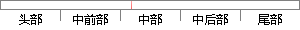

对于复杂的网络，误差函数为多维空间中的一个凹凸不平的曲面，所以在网络训练过程中极有可能陷入某一个小的凹区，产生一个局部极小值。
片段位置图

相似结果|
相似片段 1：研究点沿误差函数的斜面逐渐达到误差的最小值。对于复杂的网络，其误差函数为多维空间的曲面，而且曲面表面是凹凸不平的，因而在对其训练过程中，可能陷入某--+谷区，而这--+谷区产生的是一个局部极小值。由此点向各方向变化均使误差增加，以致于使训练无法逃出这一局部
相似片段 2：是从某一起点沿误差函数的斜面逐渐达到误差的极小值，对于复杂的网络，其误差函数为多维空间的曲面，就像一个碗，其碗底是最小值点，但是这个碗的表面凹凸不平的，因而在对其进行训练的过程中，可能陷入某一小谷区。而这一小谷区产生一个局部最小值，由此点向各个方向变化均
相似片段 3：解，很可能是一个局部极小解。这是因为BP算法采用的是梯度下降法，训练是从某一起始点沿误差函数的斜面逐渐达到误差的最小值。对于复杂的网络．其误差函数为多维空间曲面，就像一个碗，其碗底是最小值点。但是这个碗的表面是凹凸不平的，因而在对其训练过程中，可能陷入
相似片段 4：．其误差函数为多维空间的曲面，就像一个碗，其碗底是最小值点。但是这个碗的表面是凹凸不平的．因而在对其训练过程中．可能陷入某一小谷区．而这一小谷区产生的是一个局部极小值。由此点向各方向变化均使误差增加．以至于使训练无法逃出这一局部极小值。[Sl虽然BP
|
※ 片段修改建议 ※
近似词参考：- 对于：对 对付
- 复杂：庞大 繁杂
- 网络：收集
- 误差：偏差
- 网络：收集
- 训练：练习
- 过程中：过程当中
- 可能：大概
- 陷入：堕入
- 产生：发生 孕育发生
系统自动生成语句：对庞大的收集，偏差函数为多维空间中的一个凹凸不平的曲面，所以在收集练习过程当中极有大概堕入某一个小的凹区，发生一个局部极小值。
注：本片段修改建议为系统自动生成，仅供参考。